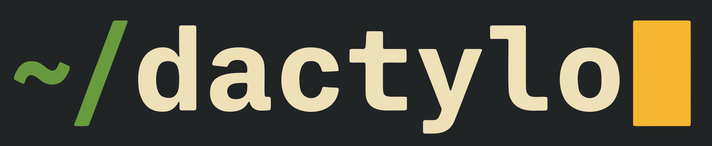

Pick a duration and a difficulty, type an endless stream of words against the clock with live per-character feedback, and watch your speed, accuracy, and consistency stack up against your own history.
cargo build --release
A single binary that drops you straight into a session. No accounts, no browser tab, no telemetry — just words, a clock, and your own numbers to beat.
Choose a 15, 30, 60, or 120 second run. The clock starts on your first keystroke, never before, so a slow first move never costs you.
Setup appears only on the first launch. Your duration and level are saved, so every run after that drops you straight into typing. Press s on the results screen to change them.
Correct characters turn green. A mistake shows the expected character on a red background. A block cursor always marks exactly where you are.
A centered, fixed-width column shows three lines at a time. The cursor opens on the top line, then holds the middle as text scrolls up beneath it.
Fix mistakes as you go. Corrections clean up the line, though every wrong keystroke still counts toward your accuracy — no hiding from it.
Every session is measured against your average and personal best for that level, with up and down deltas so you can see the trend at a glance.
Results are appended as JSON lines on your own machine. Yours to read, grep, chart, or back up. Cancelled runs are simply never recorded.
Words are sampled from a frequency-ranked English list embedded in the binary. Higher levels reach further down it, into rarer and longer words.
| Level | Word pool |
|---|---|
| 1 | ~200 most common short words |
| 2 | top 1,000 words |
| 3 | top 3,000 words |
| 4 | top 7,000 words |
| 5 | full list — rare and long words |
Speed is only half the story. dactylo also tells you how clean and how steady you were.
All you need is a Rust toolchain. Build the release binary, drop it on your PATH, and type dactylo.
| Flag | Range | Default |
|---|---|---|
| --time | 5–600 s | 60 |
| --level | 1–5 | 3 |
The setup screen appears on first launch only — ← → change a value, Tab switches fields, Enter starts. Your choice is saved, so later launches drop you straight into a session. Mid-run, Esc cancels to a partial results screen (not saved) and Ctrl-C exits. On the results screen: Enter restarts, s reopens setup, q quits.
It's a couple hundred kilobytes of Rust and a word list. Build it once and the only thing left to improve is you.
cargo build --release && dactylo